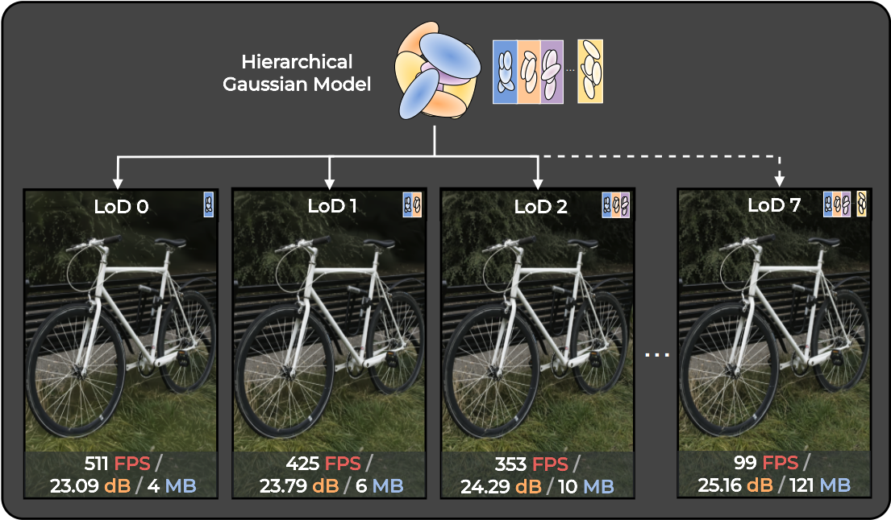
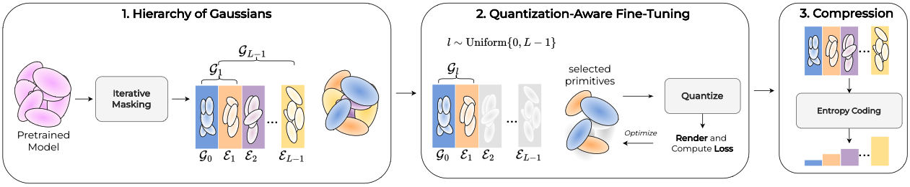
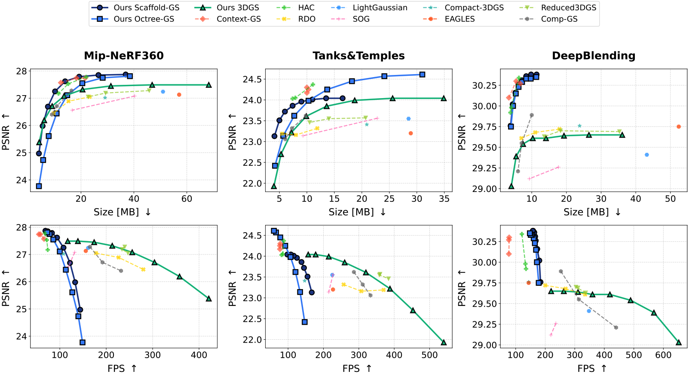

Fig. 1: Our method builds a progressive Gaussian hierarchy enabling adaptive levels of detail (LoD). Combined with compression, it supports multiple rates from a single trained model — no retraining required.
Recent progress in compressing explicit radiance field representations, and in particular 3D Gaussian Splatting, has substantially reduced memory consumption while further improving real-time rendering performance. Despite these advances, existing approaches are inherently single-rate: each target compression level is obtained through a separately optimized model, resulting in a collection of fixed operating points rather than a truly scalable representation.
We argue that scalable compression should be formulated as an intrinsic property of the representation itself. Building on this observation, we introduce GoDe (Gaussians on Demand), a general framework for scalable compression and progressive level-of-detail control. Starting from a single trained model, GoDe reorganizes Gaussian primitives into a fixed progressive hierarchy that supports multiple discrete rate–distortion operating points without retraining or per-level fine-tuning.
All L operating points are derived from one pretrained model after a single joint fine-tuning stage — no separate training per budget required.
An iterative gradient-informed masking strategy aggregates gradient norms across all Gaussian parameters to construct a stable, well-structured LoD hierarchy.
Works on vanilla 3DGS, Scaffold-GS, and Octree-GS without architectural modifications.
Decoding speedups of up to 1762× compared to prior methods via ZSTD progressive coding.
GoDe operates entirely post-training in three stages: (1) gradient-informed iterative masking organizes Gaussians into a progressive hierarchy; (2) a single quantization-aware fine-tuning stage jointly optimizes all levels via random level sampling; (3) each level is independently compressed for scalable progressive decoding.

Fig. 2: Overview of GoDe. (1) Reorganize Gaussians into a progressive hierarchy via iterative gradient-informed assignment, (2) single quantization-aware fine-tuning jointly optimizing all levels, (3) compress each level independently for scalable decoding.
GoDe covers compression rates from a few MB up to ~120 MB while preserving competitive reconstruction quality across all three standard benchmarks and all three 3DGS backbone families. The full rate–distortion curve is produced by a single progressive representation.

Fig. 3: (Top) Rate–distortion curves on Mip-NeRF360, Tanks&Temples, and DeepBlending. (Bottom) PSNR / FPS trade-off. Lower LoDs offer 500+ FPS for real-time adaptive rendering.
Use the slider to explore all 8 levels of detail for each scene.
Switching between adjacent levels can cause abrupt pop-in artifacts. GoDe mitigates this via runtime opacity interpolation: enhancement Gaussians in El fade in linearly from opacity 0 to their target value. Applied at render time only — no training overhead.
Garden
Kitchen
Truck
Counter
Bicycle
Bonsai
Train
Playroom
Comparison against recent compression methods on three standard benchmarks, all retrained and evaluated on a single NVIDIA A40. GoDe presents all 8 levels from a single trained model. Red = best, yellow = second best. ✓ = scalable (single model, multiple rates).
| Method | Level | Scalable | Mip-NeRF360 | |||||
|---|---|---|---|---|---|---|---|---|
| PSNR ↑ | SSIM ↑ | LPIPS ↓ | Size ↓ | W ↓ | FPS ↑ | |||
| Ours 3DGS-MCMC | LoD 0 | ✓ | 25.38 | 0.716 | 0.407 | 4.2 | 100 | 421 |
| LoD 1 | ✓ | 26.19 | 0.748 | 0.371 | 6.1 | 155 | 358 | |
| LoD 2 | ✓ | 26.71 | 0.773 | 0.339 | 9.1 | 242 | 304 | |
| LoD 3 | ✓ | 27.08 | 0.791 | 0.311 | 13.6 | 381 | 256 | |
| LoD 4 | ✓ | 27.32 | 0.804 | 0.289 | 20.6 | 603 | 213 | |
| LoD 5 | ✓ | 27.45 | 0.812 | 0.273 | 31.3 | 962 | 174 | |
| LoD 6 | ✓ | 27.49 | 0.815 | 0.263 | 46.9 | 1546 | 139 | |
| LoD 7 | ✓ | 27.49 | 0.816 | 0.259 | 68.3 | 2497 | 117 | |
| Ours Scaffold-GS | LoD 0 | ✓ | 24.97 | 0.710 | 0.409 | 4.1 | 50 | 144 |
| LoD 1 | ✓ | 25.98 | 0.742 | 0.376 | 5.5 | 68 | 133 | |
| LoD 2 | ✓ | 26.69 | 0.768 | 0.345 | 7.5 | 94 | 122 | |
| LoD 3 | ✓ | 27.25 | 0.789 | 0.318 | 10.2 | 129 | 108 | |
| LoD 4 | ✓ | 27.62 | 0.803 | 0.297 | 14.0 | 179 | 94 | |
| LoD 5 | ✓ | 27.79 | 0.810 | 0.284 | 19.3 | 248 | 83 | |
| LoD 6 | ✓ | 27.85 | 0.812 | 0.278 | 26.6 | 346 | 74 | |
| LoD 7 | ✓ | 27.87 | 0.813 | 0.276 | 36.9 | 483 | 69 | |
| Ours Octree-GS | LoD 0 | ✓ | 23.77 | 0.664 | 0.447 | 4.1 | 50 | 149 |
| LoD 1 | ✓ | 24.73 | 0.697 | 0.413 | 5.7 | 69 | 140 | |
| LoD 2 | ✓ | 25.61 | 0.729 | 0.378 | 7.8 | 96 | 127 | |
| LoD 3 | ✓ | 26.44 | 0.761 | 0.341 | 10.8 | 133 | 113 | |
| LoD 4 | ✓ | 27.11 | 0.789 | 0.305 | 14.8 | 186 | 100 | |
| LoD 5 | ✓ | 27.55 | 0.808 | 0.279 | 20.5 | 262 | 86 | |
| LoD 6 | ✓ | 27.75 | 0.815 | 0.265 | 28.2 | 371 | 78 | |
| LoD 7 | ✓ | 27.81 | 0.817 | 0.261 | 38.5 | 527 | 73 | |
| Context-GS | high | ✗ | 27.57 | 0.808 | 0.289 | 12.4 | 364 | 66 |
| med | ✗ | 27.74 | 0.812 | 0.279 | 18.3 | 429 | 58 | |
| low | ✗ | 27.74 | 0.812 | 0.279 | 21.6 | 477 | 55 | |
| HAC | high | ✗ | 27.17 | 0.798 | 0.306 | 11.5 | 371 | 74 |
| med | ✗ | 27.53 | 0.807 | 0.290 | 15.2 | 425 | 72 | |
| low | ✗ | 27.78 | 0.812 | 0.277 | 22.0 | 501 | 68 | |
| RDO | high | ✗ | 26.45 | 0.782 | 0.322 | 9.7 | 862 | 280 |
| med | ✗ | 26.89 | 0.796 | 0.298 | 15.3 | 1236 | 227 | |
| low | ✗ | 27.05 | 0.801 | 0.288 | 23.3 | 1860 | 178 | |
| Reduced-3DGS | high | ✗ | 27.05 | 0.807 | 0.272 | 22.7 | 1245 | 247 |
| med | ✗ | 27.19 | 0.810 | 0.267 | 29.3 | 1436 | 234 | |
| low | ✗ | 27.28 | 0.813 | 0.264 | 45.8 | 1434 | 240 | |
| Comp-GS | high | ✗ | 26.40 | 0.778 | 0.323 | 9.1 | 454 | 233 |
| med | ✗ | 26.71 | 0.790 | 0.305 | 10.9 | 470 | 193 | |
| low | ✗ | 27.28 | 0.802 | 0.283 | 16.4 | 485 | 165 | |
| SOG | high | ✗ | 26.56 | 0.791 | 0.241 | 16.7 | 2150 | 119 |
| low | ✗ | 27.08 | 0.799 | 0.230 | 40.3 | 2176 | 132 | |
| EAGLES | — | ✗ | 27.13 | 0.809 | 0.278 | 57.1 | 1290 | 156 |
| LightGS | — | ✗ | 27.24 | 0.810 | 0.273 | 51.0 | 2197 | 161 |
| Compact-3DGS | — | ✗ | 27.02 | 0.800 | 0.287 | 29.1 | 1429 | 108 |
| Method | Level | Scalable | Tanks & Temples | |||||
|---|---|---|---|---|---|---|---|---|
| PSNR ↑ | SSIM ↑ | LPIPS ↓ | Size ↓ | W ↓ | FPS ↑ | |||
| Ours 3DGS-MCMC | LoD 0 | ✓ | 21.93 | 0.768 | 0.334 | 4.0 | 100 | 540 |
| LoD 1 | ✓ | 22.70 | 0.792 | 0.304 | 5.3 | 144 | 453 | |
| LoD 2 | ✓ | 23.22 | 0.811 | 0.278 | 7.2 | 208 | 388 | |
| LoD 3 | ✓ | 23.61 | 0.825 | 0.256 | 9.9 | 301 | 320 | |
| LoD 4 | ✓ | 23.85 | 0.835 | 0.239 | 13.6 | 438 | 260 | |
| LoD 5 | ✓ | 23.99 | 0.840 | 0.226 | 18.7 | 640 | 215 | |
| LoD 6 | ✓ | 24.04 | 0.844 | 0.218 | 25.6 | 938 | 178 | |
| LoD 7 | ✓ | 24.04 | 0.844 | 0.216 | 34.9 | 1379 | 157 | |
| Ours Scaffold-GS | LoD 0 | ✓ | 23.13 | 0.806 | 0.295 | 4.1 | 50 | 167 |
| LoD 1 | ✓ | 23.51 | 0.821 | 0.273 | 5.0 | 61 | 155 | |
| LoD 2 | ✓ | 23.72 | 0.832 | 0.256 | 6.0 | 75 | 145 | |
| LoD 3 | ✓ | 23.86 | 0.839 | 0.242 | 7.4 | 93 | 138 | |
| LoD 4 | ✓ | 23.96 | 0.844 | 0.231 | 9.0 | 114 | 125 | |
| LoD 5 | ✓ | 24.01 | 0.848 | 0.224 | 11.0 | 141 | 116 | |
| LoD 6 | ✓ | 24.04 | 0.850 | 0.219 | 13.5 | 174 | 108 | |
| LoD 7 | ✓ | 24.04 | 0.851 | 0.218 | 16.5 | 215 | 98 | |
| Ours Octree-GS | LoD 0 | ✓ | 22.42 | 0.776 | 0.369 | 4.2 | 50 | 147 |
| LoD 1 | ✓ | 23.14 | 0.799 | 0.339 | 5.7 | 68 | 134 | |
| LoD 2 | ✓ | 23.62 | 0.818 | 0.310 | 7.7 | 93 | 121 | |
| LoD 3 | ✓ | 23.98 | 0.834 | 0.281 | 10.3 | 127 | 107 | |
| LoD 4 | ✓ | 24.25 | 0.848 | 0.256 | 13.7 | 173 | 92 | |
| LoD 5 | ✓ | 24.45 | 0.859 | 0.235 | 18.2 | 235 | 78 | |
| LoD 6 | ✓ | 24.57 | 0.866 | 0.223 | 24.1 | 321 | 66 | |
| LoD 7 | ✓ | 24.61 | 0.868 | 0.219 | 31.0 | 438 | 60 | |
| Context-GS | high | ✗ | 24.17 | 0.856 | 0.215 | 10.0 | 222 | 77 |
| med | ✗ | 24.30 | 0.856 | 0.214 | 10.0 | 247 | 78 | |
| low | ✗ | 24.25 | 0.855 | 0.218 | 10.3 | 251 | 77 | |
| HAC | high | ✗ | 24.03 | 0.843 | 0.237 | 7.4 | 261 | 82 |
| med | ✗ | 24.05 | 0.846 | 0.222 | 7.9 | 300 | 85 | |
| low | ✗ | 24.37 | 0.853 | 0.215 | 11.1 | 307 | 88 | |
| RDO | high | ✗ | 23.19 | 0.827 | 0.253 | 5.5 | 395 | 370 |
| med | ✗ | 23.16 | 0.833 | 0.239 | 8.0 | 598 | 307 | |
| low | ✗ | 23.32 | 0.839 | 0.232 | 11.9 | 912 | 257 | |
| Reduced-3DGS | high | ✗ | 23.46 | 0.840 | 0.228 | 10.5 | 558 | 384 |
| med | ✗ | 23.55 | 0.843 | 0.223 | 14.0 | 656 | 358 | |
| low | ✗ | 23.57 | 0.844 | 0.221 | 20.7 | 648 | 360 | |
| Comp-GS | high | ✗ | 23.06 | 0.816 | 0.278 | 6.1 | 270 | 334 |
| med | ✗ | 23.32 | 0.828 | 0.259 | 7.3 | 242 | 311 | |
| low | ✗ | 23.62 | 0.837 | 0.248 | 9.8 | 241 | 286 | |
| SOG | high | ✗ | 23.15 | 0.828 | 0.198 | 9.3 | 1207 | 216 |
| low | ✗ | 23.56 | 0.837 | 0.186 | 22.8 | 1242 | 227 | |
| EAGLES | — | ✗ | 23.20 | 0.837 | 0.241 | 28.9 | 651 | 227 |
| LightGS | — | ✗ | 23.55 | 0.839 | 0.235 | 28.5 | 1211 | 225 |
| Compact-3DGS | — | ✗ | 23.41 | 0.836 | 0.238 | 20.9 | 842 | 147 |
| Method | Level | Scalable | Deep Blending | |||||
|---|---|---|---|---|---|---|---|---|
| PSNR ↑ | SSIM ↑ | LPIPS ↓ | Size ↓ | W ↓ | FPS ↑ | |||
| Ours 3DGS-MCMC | LoD 0 | ✓ | 29.03 | 0.886 | 0.376 | 4.1 | 100 | 652 |
| LoD 1 | ✓ | 29.39 | 0.893 | 0.362 | 5.5 | 146 | 568 | |
| LoD 2 | ✓ | 29.54 | 0.897 | 0.351 | 7.5 | 212 | 489 | |
| LoD 3 | ✓ | 29.61 | 0.900 | 0.342 | 10.3 | 310 | 419 | |
| LoD 4 | ✓ | 29.64 | 0.901 | 0.336 | 14.1 | 452 | 360 | |
| LoD 5 | ✓ | 29.65 | 0.901 | 0.331 | 19.3 | 660 | 311 | |
| LoD 6 | ✓ | 29.65 | 0.902 | 0.327 | 26.5 | 965 | 263 | |
| LoD 7 | ✓ | 29.61 | 0.901 | 0.326 | 36.1 | 1411 | 220 | |
| Ours Scaffold-GS | LoD 0 | ✓ | 29.75 | 0.897 | 0.358 | 4.0 | 50 | 178 |
| LoD 1 | ✓ | 30.00 | 0.901 | 0.349 | 4.6 | 58 | 172 | |
| LoD 2 | ✓ | 30.15 | 0.904 | 0.343 | 5.4 | 68 | 169 | |
| LoD 3 | ✓ | 30.23 | 0.906 | 0.338 | 6.2 | 80 | 165 | |
| LoD 4 | ✓ | 30.29 | 0.908 | 0.334 | 7.2 | 93 | 161 | |
| LoD 5 | ✓ | 30.33 | 0.909 | 0.331 | 8.4 | 109 | 155 | |
| LoD 6 | ✓ | 30.35 | 0.909 | 0.329 | 9.7 | 127 | 151 | |
| LoD 7 | ✓ | 30.33 | 0.909 | 0.328 | 11.3 | 149 | 148 | |
| Ours Octree-GS | LoD 0 | ✓ | 29.38 | 0.891 | 0.365 | 3.7 | 50 | 213 |
| LoD 1 | ✓ | 29.65 | 0.895 | 0.359 | 4.1 | 56 | 212 | |
| LoD 2 | ✓ | 29.81 | 0.897 | 0.354 | 4.6 | 64 | 212 | |
| LoD 3 | ✓ | 29.91 | 0.899 | 0.350 | 5.1 | 72 | 205 | |
| LoD 4 | ✓ | 29.97 | 0.900 | 0.347 | 5.7 | 81 | 200 | |
| LoD 5 | ✓ | 30.02 | 0.901 | 0.344 | 6.4 | 91 | 195 | |
| LoD 6 | ✓ | 30.03 | 0.901 | 0.343 | 7.1 | 103 | 194 | |
| LoD 7 | ✓ | 30.03 | 0.901 | 0.342 | 7.8 | 116 | 192 | |
| Context-GS | high | ✗ | 30.10 | 0.907 | 0.341 | 3.4 | 155 | 121 |
| med | ✗ | 30.30 | 0.911 | 0.332 | 5.5 | 167 | 133 | |
| low | ✗ | 30.27 | 0.911 | 0.329 | 6.7 | 181 | 135 | |
| HAC | high | ✗ | 29.92 | 0.903 | 0.250 | 3.9 | 180 | 166 |
| med | ✗ | 29.98 | 0.904 | 0.340 | 4.1 | 187 | 173 | |
| low | ✗ | 30.34 | 0.909 | 0.329 | 6.3 | 196 | 166 | |
| RDO | high | ✗ | 29.61 | 0.903 | 0.331 | 7.0 | 531 | 335 |
| med | ✗ | 29.68 | 0.905 | 0.323 | 11.0 | 891 | 269 | |
| low | ✗ | 29.72 | 0.906 | 0.318 | 18.0 | 1478 | 200 | |
| Reduced-3DGS | high | ✗ | 29.63 | 0.906 | 0.318 | 13.6 | 804 | 337 |
| med | ✗ | 29.70 | 0.907 | 0.315 | 18.3 | 990 | 304 | |
| low | ✗ | 29.69 | 0.907 | 0.314 | 35.3 | 988 | 311 | |
| Comp-GS | high | ✗ | 29.22 | 0.894 | 0.369 | 6.0 | 311 | 440 |
| med | ✗ | 29.56 | 0.899 | 0.351 | 7.1 | 271 | 315 | |
| low | ✗ | 29.89 | 0.904 | 0.336 | 10.0 | 246 | 254 | |
| SOG | high | ✗ | 29.12 | 0.892 | 0.270 | 9.3 | 800 | 219 |
| low | ✗ | 29.26 | 0.894 | 0.268 | 17.7 | 890 | 236 | |
| EAGLES | — | ✗ | 29.75 | 0.910 | 0.318 | 52.4 | 1192 | 144 |
| LightGS | — | ✗ | 29.41 | 0.904 | 0.329 | 43.2 | 956 | 348 |
| Compact-3DGS | — | ✗ | 29.76 | 0.905 | 0.324 | 23.8 | 1053 | 144 |
Encoding and decoding times in seconds; training time in hours. For non-scalable methods, training time refers to a single compression level — obtaining multiple operating points would require training multiple models. GoDe produces all levels within a single training run.
| Context-GS | HAC | RDO-GS | Comp-GS | |||||||||
|---|---|---|---|---|---|---|---|---|---|---|---|---|
| Level | Enc ↓ | Dec ↓ | Train ↓ | Enc ↓ | Dec ↓ | Train ↓ | Enc ↓ | Dec ↓ | Train ↓ | Enc ↓ | Dec ↓ | Train ↓ |
| High | 52.7 | 53.1 | 1.33 | 8.6 | 11.8 | 1.19 | 1.1 | 2.2 | 1.31 | 10.8 | 9.1 | 1.63 |
| Medium | 87.8 | 82.5 | 9.7 | 12.5 | 2.9 | 7.4 | 10.8 | 9.0 | ||||
| Low | 97.2 | 88.1 | 14.9 | 17.9 | 4.8 | 19.0 | 10.9 | 8.8 | ||||
| Ours 3DGS | Ours Scaffold-GS | Ours Octree-GS | |||||||
|---|---|---|---|---|---|---|---|---|---|
| Level | Enc ↓ | Dec ↓ | Train ↓ | Enc ↓ | Dec ↓ | Train ↓ | Enc ↓ | Dec ↓ | Train ↓ |
| High | 10.6 | 1.2 | 1.20 | 2.1 | 0.2 | 0.57 | 5.0 | 0.2 | 1.12 |
| Medium | 18.1 | 1.9 |
same run |
2.9 | 0.3 |
same run |
6.6 | 0.3 |
same run |
| Low | 32.7 | 2.4 | 4.2 | 0.5 | 8.8 | 0.3 | |||
Bold Dec values indicate best decoding times. GoDe achieves up to 1762× faster decoding compared to Context-GS at matched compression rates.